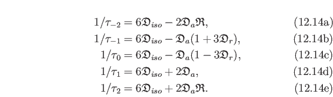

Next: Construction of the Hessian Up: Construction of the values, Previous: The sum of chi-squared Contents Index
![\includegraphics[
width=0.9\textwidth,
bb=143 399 494 777
]{images/gradient}](img458.png)
|
The construction of the gradient is significantly different for the models
,
,
 , and
, and
 .
In Figure 14.1 the construction of the chi-squared gradient
.
In Figure 14.1 the construction of the chi-squared gradient

 for the global model
for the global model
 is demonstrated.
In this case
is demonstrated.
In this case
where

 is the vector of partial derivatives of the chi-squared equation
is the vector of partial derivatives of the chi-squared equation  for the residue i.
The length of this vector is
for the residue i.
The length of this vector is
| (14.10) |
with each position of the vector j equal to
 where each
where each  is a parameter of the model.
is a parameter of the model.
The construction of the gradient

 for the model
for the model
 is simply a subset of that of
is simply a subset of that of
 .
This is demonstrated in Figure 14.1 by simply taking the component of the gradient
.
This is demonstrated in Figure 14.1 by simply taking the component of the gradient

 denoted by the symbol
denoted by the symbol

 (the orange blocks) and summing these for all residues.
This sum is given by (14.9) and
(the orange blocks) and summing these for all residues.
This sum is given by (14.9) and
| (14.11) |
For the parameter set
, which consists of the local  parameter and the model-free parameters of a single residue, the gradient
parameter and the model-free parameters of a single residue, the gradient

 for the residue i is simply the combination of the single orange block and single yellow block of the index i (Figure 14.1).
for the residue i is simply the combination of the single orange block and single yellow block of the index i (Figure 14.1).
The model-free parameter set
is even simpler.
In Figure 14.1 the gradient

 is simply the vector denoted by the single yellow block for the residue i.
is simply the vector denoted by the single yellow block for the residue i.